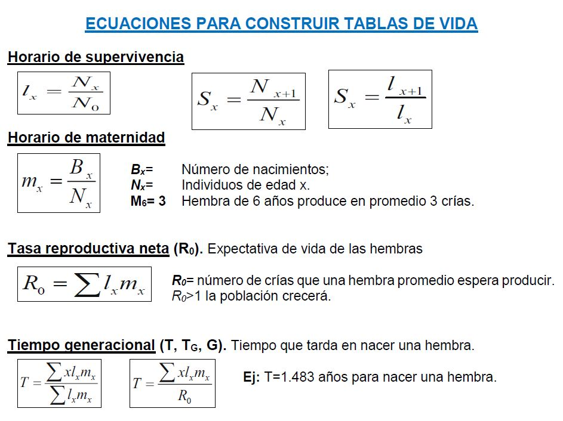

Taller 6.1 Tablas de vida por edades
Taller de Ecología de Poblaciones mediante Tablas de Vida y Matrices
Introducción

Cuando intentamos modelar el crecimiento de poblaciones de fauna o de flora, en los que la supervivencia y la reproducción se relacionan con la edad de los individuos, o con la estacionalidad, se puede asumir la población se encuentra estructurada, por diferentes tipos de estado, como la edad, tamaños, estadios, entre otros. En este sentido, existen modelos, que permiten simular o proyectar los principales parámetros demográficos de las poblaciones a lo largo de sus ciclos de vida.
Para lo anterior, se suelen utilizar “tablas de vida” en donde los organismos de la población son organizados por clases de edad (x). Estas tablas de vida consisten en arreglos de diferentes parámetros demográficos que afectan al incremento o disminución de las densidades poblacionales, con base en parámetros de supervivencia y de reproducción.
Las tablas de vida son excelentes para calcular los datos de supervivencia y otros aspectos de las poblaciones estructuradas por edad o estados, pero no están diseñadas para modelar la dinámica de la abundancia de las poblaciones estructuradas, por lo que se debe acudir a sistemas matriciales.
Una manera de representar la dinámica poblacional en cuanto a la fecundidad (Fx) y la supervivencia por cada clase de edad (Sx), consiste en organizar los datos de la tabla de vida, en una matriz, teniendo en cuenta a la estructura de edades en columnas (tiempo t) y filas de contribuciones o de supervivencia (en tiempo t+1). Las matrices se pueden construir a partir de las tablas de vida o a partir de gráficos del ciclo de vida de las poblaciones. Si la información está organizada a partir de clases de edades, la matriz utilizada es la de Leslie (L). Lo modelos matriciales de estructuras de estado como las edades (x), son desarrollados a partir de matrices de Leslie (Leslie, 1954, 1958), consisten la organización parámetros demográficos obtenidos de tablas de vida por edades (tx0), en tiempos futuros (tx+1, tx+2,…, tx+n) o de los ciclos de vida. Las matrices pueden ser construidas a partir de censos previos a la etapa reproductiva (pre-reproductivos o prebreeding) o pos-reproductivos (postbreeding). Para el primer caso la fecundidad (Fx) = Sx * mx+1, para el segundo caso Fx= S0 * mx.
L=\left[\begin{array}{ccc} F_{0} & F_{1} & F_{2} & ... & F_{n}\\ S_{0} & 0 & 0 & 0 & 0\\ 0 & S_{1} & 0 & 0 & 0\\ 0 & 0 & ... & 0 & 0\\ 0 & 0 & 0 & S_{q} & 0\\ \end{array}\right]
Una vez que los datos son organizados en matrices de Leslie, se puede realizar una proyección multi-estado (multi-edad) del crecimiento poblacional, multiplicando la matriz L por la densidad poblacional de la tabla de vida (Nt) que corresponde a un vector columna, con lo cual podremos calcular la densidad poblacional en un siguiente tiempo (Nt+1).
L * N{t} = N{t+1}=\left[\begin{array}{ccc} F_{0} & F_{1} & F_{2} & ... & F_{n}\\ S_{0} & 0 & 0 & 0 & 0\\ 0 & S_{1} & 0 & 0 & 0\\ 0 & 0 & ... & 0 & 0\\ 0 & 0 & 0 & S_{q} & 0\\ \end{array}\right] * \left[\begin{array}{ccc} n_{0}\\ n_{1}\\ n_{2}\\ ...\\ n_{n}\\ \end{array}\right] = \left[\begin{array}{ccc} n_{0+1}\\ n_{1+1}\\ n_{2+1}\\ ...\\ n_{n+1}\\ \end{array}\right]
Para proyectar la población en tiempos siguientes, la matriz L permanece constante, por lo que se asume que las tasas de fecundidad (Fx) y supervivencia (Sx) no cambian, la densidad en los siguientes periodos de tiempo, puede calcularse multiplicando a L por N t+n, donde n corresponde al tiempo más reciente de la proyección.
Cuestionario

Nota: Descargar el siguiente archivo de Excel BASE_DATOS_XLSX y construir la tabla de vida, según las indicaciones del docente y de las pautas que se presentan a continuación:
Una población tiene 4 clases de edades (0, 1, 2 y 3). La densidad (Nx) en la primera clase inicia con 200 individuos, luego en las clases siguientes sobrevive el 80%, 50% y 50% de los individuos respectivamente. La maternidad (mx) de las clases es 0, 2, 3 y 3 respectivamente.
Construir su tabla de vida, con los siguientes elementos y describir el significado de los estimadores demográficos Ro, T, rest., Lamdda y r.
Calcular la esperanza de vida ex.
Construir la matriz de proyección correspondiente (Leslie – L), con una matriz post-reproductiva.
Realizar una proyección de la población por tres periodos (n0 a n5) y graficar en x los periodos de tiempo (t) proyectados y en y los valores de Nx.
Estimadores generales |
Estimadores de r |
Esperanza de vida |
||||||||||||||||
|---|---|---|---|---|---|---|---|---|---|---|---|---|---|---|---|---|---|---|
| x | Nx | mx | Bx | Sx | Dx | lx | dx | qx | Px | lx.mx | x.lx.mx | e^(-r.x) | e^(-r.x).(lx.mx) | e^(-r.x) | e^(-r.x).(lx.mx) | Lx | Tx | ex |
| 0 | . | . | . | . | . | . | . | . | . | . | . | . | . | . | . | . | . | . |
| 1 | . | . | . | . | . | . | . | . | . | . | . | . | . | . | . | . | . | . |
| 2 | . | . | . | . | . | . | . | . | . | . | . | . | . | . | . | . | . | . |
| 3 | . | . | . | . | . | . | . | . | . | . | . | . | . | . | . | . | . | . |
Con los datos de la pasada sesión de clase, reportar la tabla de vida calculada, el ciclo de vida, la matriz de Leslie (post-reproductiva y pre-reproductiva).
- Construir su tabla de vida, calcular los estimadores a hasta d, del ejercicio anterior.
Estimadores generales |
Estimadores de r |
Esperanza de vida |
||||||||||||||||
|---|---|---|---|---|---|---|---|---|---|---|---|---|---|---|---|---|---|---|
| x | Nx | mx | Bx | Sx | Dx | lx | dx | qx | Px | lx.mx | x.lx.mx | e^(-r.x) | e^(-r.x).(lx.mx) | e^(-r.x) | e^(-r.x).(lx.mx) | Lx | Tx | ex |
| 0 | 500 | 0.0 | . | . | . | . | . | . | . | . | . | . | . | . | . | . | . | . |
| 1 | 423 | 0.5 | . | . | . | . | . | . | . | . | . | . | . | . | . | . | . | . |
| 2 | 260 | 1.4 | . | . | . | . | . | . | . | . | . | . | . | . | . | . | . | . |
| 3 | 195 | 1.0 | . | . | . | . | . | . | . | . | . | . | . | . | . | . | . | . |
| 4 | 50 | 0.5 | . | . | . | . | . | . | . | . | . | . | . | . | . | . | . | . |
Investigar en que significa el “valor reproductivo de la población - vx” y calcular para la segunda tabla de vida, utilizando la fórmula propuesta por Gotelli (2008) (ver hoja de fórmulas) y el procedimiento realizado por Lemos et al. (2005), a nivel matricial (p. 123 – 126).
Investigar en que consiste “la distribución estable de edades - cx” y calcular para la segunda tabla de vida, utilizando la fórmula propuesta por Gotelli (2008) (ver hoja de fórmulas) y el procedimiento realizado por Lemos et al. (2005), a nivel matricial (p. 121 – 123).
Referentes Bibliográficos
- Ecuaciones para tablas de vida y matrices - ENLACE (Se requiere inprimirlas y llevarlas a las sesiones de clase).

- Libro - Técnicas para el estudio de poblaciones de fauna silvestre (Lemos et al. 2005) - ENLACE (Revisar desde la página 105).

- Libro: Applied Population Ecology: Principles and Computer Exercises Using RAMAS EcoLab 2.0. (Akçakaya et al. 1999). - ENLACE

- Libro: A Primer of Ecology. (Gotelli, Nicholas J. 2008). - ENLACE.